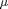

NUM2SIP and NUM2BIP Examples
The function NUM2SIP converts a numeric scalar to a character vector of the number value with a metric prefix, for example 1000 -> '1 k'. Optional arguments control the number of digits, select the prefix symbol or prefix name, and any trailing zeros: this document shows examples of how to use these features.
The development of NUM2SIP was motivated by the lack of any well- written function that provides this conversion: many of the functions available on FEX do not conform to the SI standard, or use buggy conversion algorithms, or are simply painfully slow. NUM2SIP has been tested against a large set of test cases, including many edge-cases and with all of the optional arguments.
Contents
Basic Usage
In many cases NUM2SIP can be called with just a numeric value:
num2sip(1000) num2sip(1.2e-3) num2sip(456e+7)
ans = 1 k ans = 1.2 m ans = 4.56 G
2nd Input: Significant Figures
NUM2SIP returns five significant figures by default. The optional second input argument specifies the number of significant figures. Note that NUM2SIP correctly rounds upwards to the next prefix:
num2sip(987000,3) num2sip(987000,2) num2sip(987000,1)
ans = 987 k ans = 990 k ans = 1 M
3rd Input: Symbol or Full Prefix
NUM2SIP returns the prefix symbol by default. The optional third input argument selects between the symbol and the full prefix name. Note that u is used instead of the  character, to simplify the file encoding.
num2sip(1e6,[],false) % default
num2sip(1e6,[],true)
ans = 1 M ans = 1 mega
3rd Input: Fixed Prefix
NUM2SIP allow the prefix to be selected by the user, and all outputs will be given as coefficients of the selected prefix:
num2sip(10^2,[],'k') num2sip(10^4,[],'k') num2sip(10^6,[],'k')
ans = 0.1 k ans = 10 k ans = 1000 k
4th Input: Trailing Zeros
NUM2SIP removes trailing zeros by default. The optional fourth input argument selects between removing and keeping any trailing zeros:
num2sip(1000,3,[],false) % default
num2sip(1000,3,[],true)
ans = 1 k ans = 1.00 k
Space Character
The standard for the International System of Quantities (ISQ) ISO/IEC 80000 (previously ISO 31) specifies that "there is a space between the numerical value and the unit symbol". Note that this applies even when there is no SI prefix, just the unit. NUM2SIP correctly includes the space character in all cases:
[num2sip(1e-3),'V'] [num2sip(1e+0),'V'] [num2sip(1e+3),'V']
ans = 1 mV ans = 1 V ans = 1 kV
Larger/Smaller Values Without a Prefix
If the magnitude of the input value is outside the prefix range, then no prefix is used and the value is returned in exponential notation:
num2sip(1e-99) num2sip(1e+85)
ans = 1e-99 ans = 1e+85
NUM2BIP (Binary Prefix)
The submission includes the bonus function NUM2BIP: this also converts a numeric scalar to a prefixed string, but uses the ISO 80000 defined binary prefixes instead of metric prefixes. Binary prefixes are mostly used for computer memory.
The function NUM2BIP has exactly the same arguments as NUM2SIP:
num2bip(1024) num2bip(1025,5,true,true)
ans = 1 Ki ans = 1.0010 kibi
Reverse Conversion: String to Numeric
The functions SIP2NUM and BIP2NUM convert from prefixed strings into numerics:
sip2num('10 M') bip2num('10 Mi')
ans =
10000000
ans =
10485760